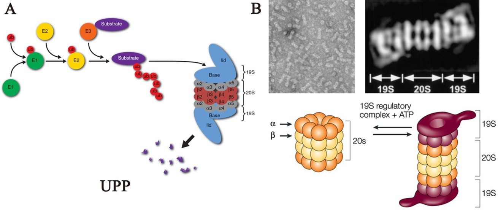

蛋白酶体小分子抑制剂AI筛选系统 使用说明
版本：0.1.0
1. 前言
蛋白酶体是一种多亚基大分子蛋白质复合物,普遍存在于真核生物和一些原核生物中。蛋白酶体的主要作用是选择性降解细胞内绝大多数蛋白质(80–90%)[1, 2]。
因此，蛋白酶体功能对于蛋白质细胞内平衡至关重要,调控几乎所有的重要生命活动。 蛋白酶体是泛素-蛋白酶体通路(ubiquitin-proteasome pathway，UPP)重要组成部分。UPP由泛素、泛素活化酶(E1)、泛素结合酶(E2)、泛素连接酶(E3)、蛋白酶体构成。
细胞内需要被降解的蛋白质在E1、E2、E3的作用下，被标记上多聚泛素分子，被多泛素化修饰的蛋白质最终被蛋白酶体识别进而被降解[3, 4] （图1.1）。

蛋白酶体和肿瘤密切相关。在细胞内，许多抗肿瘤蛋白分子都是通过泛素-蛋白酶体通路（UPP）降解的。 蛋白酶体抑制剂通过抑制蛋白酶体活性而阻断UPP，抑制抗肿瘤蛋白分子的降解，从而可以抑制多种肿瘤细胞增殖及诱导肿瘤细胞凋亡[5]。
例如，蛋白酶体抑制剂可以抑制I-κB降解，I-κB可以和NF-κB结合并阻止NF-κB活化，使得NF-κB调控的许多和细胞增殖相关的基因表达受阻，从而抑制了肿瘤生长并诱导凋亡[6]。因此，蛋白酶体及其抑制剂已成为抗肿瘤治疗的新靶点。
根据药效基团的化学结构，蛋白酶体抑制剂可以分为5类：肽醛（MG-132），硼酸肽（硼替佐米），肽环氧酮（环氧霉素，依匹霉素和卡非佐米），肽乙烯基砜和β-内酯（lactacystin及其衍生物）[7, 8]。
硼替佐米（Bortezomib或PS341）是第一个被美国食品和药物监督管理局（FDA）批准上市的蛋白酶体抑制剂，临床用于治疗多发性骨髓瘤和套细胞淋巴瘤[9]。硼替佐米通过和β5亚基可逆结合抑制20S蛋白酶体活性[10]。硼替佐米可有效延缓肿瘤进展、改善患者生存状况，已成为复发性多发性骨髓瘤的一线用药。硼替佐米副作用大，并且容易发生耐药，对实体瘤治疗效果差。
为了克服以上缺陷，人们开发了第二代蛋白酶体抑制剂。卡非佐米（carfilzomib）是FDA批准为第二个蛋白酶体抑制剂药物，用于治疗之前接受至少2种药物（包括硼替佐米和免疫调节剂治疗）的多发性骨髓瘤患者[11, 12]。卡非佐米是一种特异性、不可逆的蛋白酶体抑制剂，属于肽环氧酮类化合物。卡非佐米可以不可逆共价结合蛋白酶体的β5亚基和免疫蛋白酶体β5i (LMP7)亚基[13]。2015年，首个口服蛋白酶体抑制剂Ixazomib Citrate (MLN9708) 获批上市[14]。Ixazomib Citrate在体内水解为具有生物活性的Ixazomib (MLN2238)；Ixazomib可逆的抑制20S蛋白酶体的β5亚基[14]。此外，还有一些蛋白酶体抑制剂正在进行临床试验，如Delanzomib(CEP-18770)、Oprozomib (ONX-0912)、NPI-0052 (Marizomib)。
以蛋白酶体为靶点的抑制剂药物的开发是目前国外竞相研究的热点。目前，蛋白酶体抑制剂主要用于血液系统恶性肿瘤的治疗，对实体肿瘤的治疗效果并不理想。在对多发性骨髓瘤治疗中也存在副作用较大，容易发生耐药的缺点。这是由于有效的蛋白酶体抑制剂筛选困难，全新结构的候选抑制剂数量过少。到目前为止，国外批准上市的蛋白酶体抑制剂药物仅为三种；国内批准在临床使用的此类药物仅为一种（硼替佐米）。因此，如何快速有效的筛选到效果更好、特异性更强、副作用更小、对实体肿瘤也起作用的新一代蛋白酶体抑制剂药物具有重大的医学临床价值。
蛋白酶体小分子抑制剂AI筛选系统 (AI-based Small Molecule Screening System for Proteasome Inhibitors) 基于TMEM8B-a的蛋白酶体小分子抑制剂高通量筛选系统（国家发明专利号：2023117605848），对大量小小分子化合物（包括MCE天然产物库477种、MCE骨架库1000种、辉瑞骨架药物化合库4208种，约5685种化合物） 进行了高通量筛选获得的现实数据为基础，构建训练的AI神经网络预测筛选模型（MPNN）。
蛋白酶体小分子抑制剂AI筛选系统是一款专业的分子结构可视化与属性分析工具，专为科研工作者、教育工作者及开发者设计，致力于为化学与生命科学领域的数据探索与研究提供高效支持。 本筛选系统的开发构建受到国家自然基金面上项目(82172879)，湖南省杰出青年基金（2022JJ10096）的大力资助，特此感谢！
2. 参考文献
- [1]. Collins, G.A. & Goldberg, A.L., The Logic of the 26S Proteasome, Cell, 2017, 169(5): 792-806
- [2]. Enenkel, C., Proteasome dynamics, Biochimica et biophysica acta, 2014, 1843(1): 39-46
- [3]. Varshavsky, A., The ubiquitin system, an immense realm, Annual review of biochemistry, 2012, 81: 167-176
- [4]. Inobe, T. & Matouschek, A., Paradigms of protein degradation by the proteasome, Current opinion in structural biology, 2014, 24: 156-164
- [5]. Johnson, D.E., The ubiquitin-proteasome system: opportunities for therapeutic intervention in solid tumors, Endocrine-related cancer, 2015, 22(1): T1-17
- [6]. Traenckner, E.B., Wilk, S. & Baeuerle, P.A., A proteasome inhibitor prevents activation of NF-kappa B and stabilizes a newly phosphorylated form of I kappa B-alpha that is still bound to NF-kappa B, EMBO J, 1994, 13(22): 5433-5441
- [7]. Adams, J., The development of proteasome inhibitors as anticancer drugs, Cancer cell, 2004, 5(5): 417-421
- [8]. Kisselev, A.F. & Goldberg, A.L., Proteasome inhibitors: from research tools to drug candidates, Chemistry & biology, 2001, 8(8): 739-758
- [9]. Kane, R.C., Bross, P.F., Farrell, A.T. & Pazdur, R., Velcade: U.S. FDA approval for the treatment of multiple myeloma progressing on prior therapy, The oncologist, 2003, 8(6): 508-513
- [10]. Groll, M., Berkers, C.R., Ploegh, H.L. & Ovaa, H., Crystal structure of the boronic acid-based proteasome inhibitor bortezomib in complex with the yeast 20S proteasome, Structure, 2006, 14(3): 451-456
- [11]. Thompson, J.L., Carfilzomib: a second-generation proteasome inhibitor for the treatment of relapsed and refractory multiple myeloma, The Annals of pharmacotherapy, 2013, 47(1): 56-62
- [12]. Herndon, T.M. et al., U.S. Food and Drug Administration approval: carfilzomib for the treatment of multiple myeloma, Clinical cancer research : an official journal of the American Association for Cancer Research, 2013, 19(17): 4559-4563
- [13]. Harshbarger, W., Miller, C., Diedrich, C. & Sacchettini, J., Crystal structure of the human 20S proteasome in complex with carfilzomib, Structure, 2015, 23(2): 418-424 [14]. Shirley, M., Ixazomib: First Global Approval, Drugs, 2016, 76(3): 405-411